河童と蛙のいるところ/東京都
東京都台東区。
浅草と上野の間に挟まれた松が谷には河童を祀ったお寺と蛙を祀ったお寺がある。
方や妖怪、方や両生類、と分類は違えど、なんとなくびっしょりねっちょりしてる類の方々がわずか数百メートル離れたところに祀られているのに興味をそそられて久しぶりに松が谷に行ってみることにした。
基点はかっぱ橋道具街。ご存知食器、調理器具からユニフォーム、食品サンプル等々およそ飲食店に必要なモノがすべて揃っているという専門店街である。
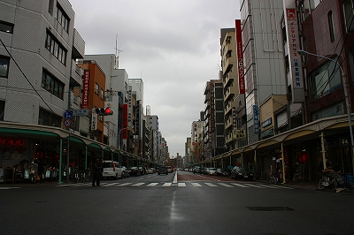
個人的な話で恐縮だが、十代の頃私はこの近辺をよく闊歩していたのでその存在は知ってはいたが、当時の私はお寺よりもっともっと面白いことがたくさんあったようで結局見に行くことはなかったのである。
で、河童の寺、曹源寺。
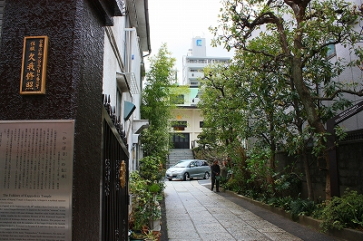
その昔、この辺りが水害に悩んでいた頃、文化年間の話。
この地で雨合羽商を営んでいた合羽川太郎（合羽屋喜八）という人が私財を投じて治水事業を行った。
その際、昔助けたことのある河童が工事を手伝ったため滞りなく工事が進んだという。
これがこの地に伝わる河童伝説。
で、その川太郎の墓がある曹源寺が河童大明神を祀っているというわけ。
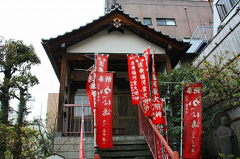
これがその河童を祀るお堂。
やはりお供え物はキュウリですね。
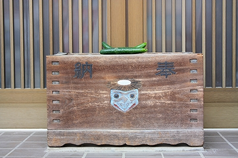
外から覗いたが祭壇には河童の掛け軸があり、様々な河童グッズが並んでいた。
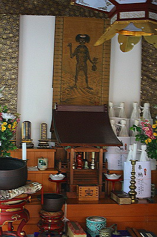 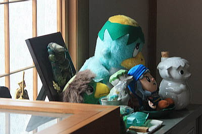
河童の手のミイラなるモノまであるとか。
境内には河童像があちこちに点在している。
夫婦河童か？
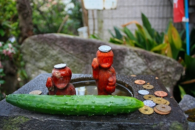 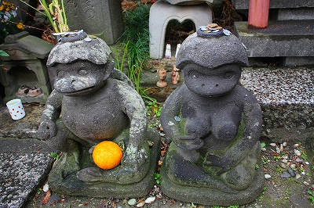
こうして改めて見てみると造形バリエーションが豊富なことに気づく。
河童小便小僧バージョンとか
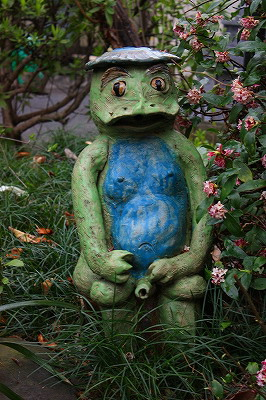
それだけ人気の妖怪、ということになるのだろう。
入り口の近くにはかっぱのぎーちゃんなる不思議な像が鎮座していた。
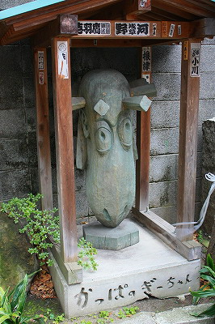 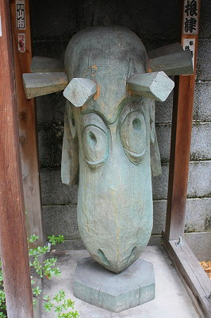
このアブストラクト感満点なお方は河童…なの…か？皿は？
つか脳天にぐるりと打ち込まれている杭は何？恐すぎなんすけど。
合羽橋界隈にはここの河童伝説にちなんで数多くの河童アイテムが点在している。
足元のタイルや商店街の看板はもちろんのこと… |
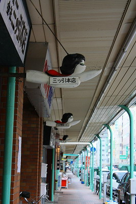 |
| 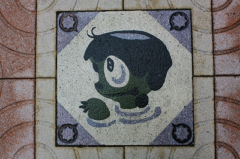 |
様々なスタイルの河童が街中に立っていたり逆立ちしてたり。
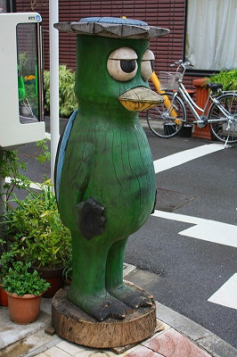 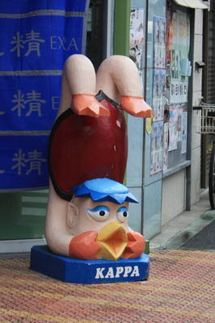
はっ、鳩山サンでは…
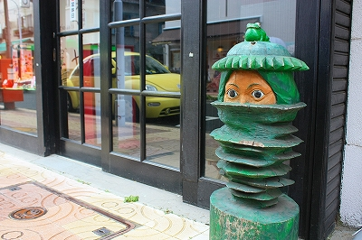
さらに平成15年、道具街のシンボルとしてゴールドの河童像が建立された。
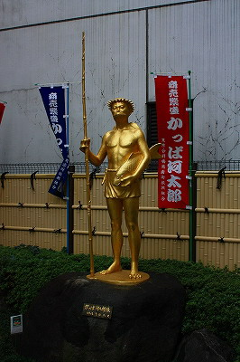
一般的に河童といえばキュウリと相撲が好きというお調子者っぽいキャラと子供や馬を川に引きずり込んで尻子玉を抜くという恐怖キャラのツータイプをイメージしがちだが、ここ合羽橋の河童伝説においては商売繁盛の神という側面も持っている。
土木工事を手伝うほどのナイスガイだから悪く言われるはずもないのだが、商売繁盛の神とはちと意外だった。
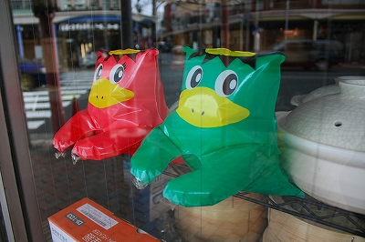
そんな河童愛にあふれた街なのだ。
一方、そのかっぱ寺から程近い本覚寺は日蓮宗のお寺だ。
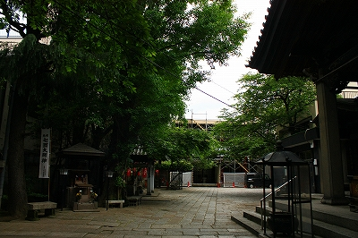
この松が谷という地域はお寺が非常に多いところなのだが、その中でもこのお寺は広い方だ。
境内の一画に小さなお堂がある。これがカエルを祀る蟇大明神である。
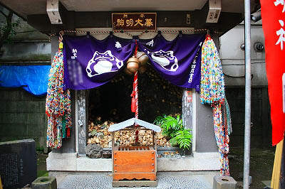 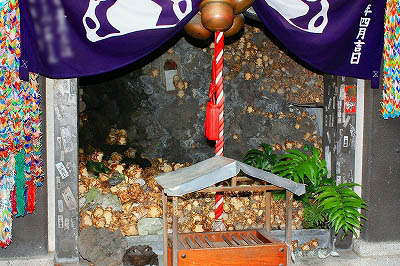
ご覧の通り、大量の陶器のカエルが奉納されている。
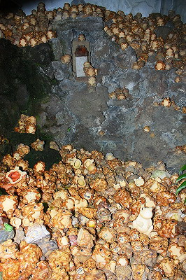
内部は火山岩を組み合わせた人工洞窟風の造りになっている。
その中央に一匹だけ石の台座に鎮座するカエルの像が本尊なのだろうか。
陶器と判っていてもこれだけ数が揃うとチョット気味が悪いっすね。
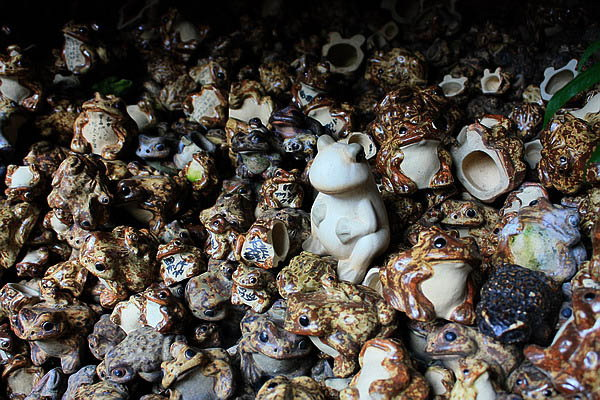
そもそもこの蟇塚、由来によれば天保の頃、とある人物が家業を助ける神として蛙蟇塚という石碑を建立したのがはじまりだという。
その後、関東大震災で埋まってしまったり、掘り出されたりと紆余曲折はあったが、千八という人物がこの蛙蟇塚石碑に願をかけたら大きなご利益があったそうな。恐らく昭和初期の頃だからtotoBIGを当てたか、エスポワールでの限定ジャンケンで勝ち抜けたか（カイジだよ）、プルトニウムの先物取引のいずれかで財を成したと思われるが、お礼に立派なお堂を建立したという。
その千八さん、花柳界に通じた人物だったらしく、芸事を生業とする稼業の方々を中心に蛙奉納が始まったのだとか。
その後空襲で全焼したが戦後すぐ復興。そのお堂も老朽化したため昭和53年に建て替えられた。それが現在のお堂というわけ。
震災と空襲、という二度の災難で姿を消したが（もっともこの界隈の建物はほとんどそうだが）、その都度心ある人が現れては復興した、という歴史を持つお堂なのだ。
つまりそれほど現世利益があった、ということなのだろう。
カエルの置物を見てみると同じような陶器の中にいくつか違うタイプもちらほら。
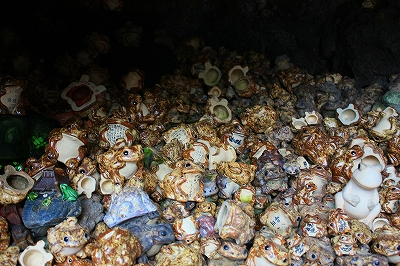 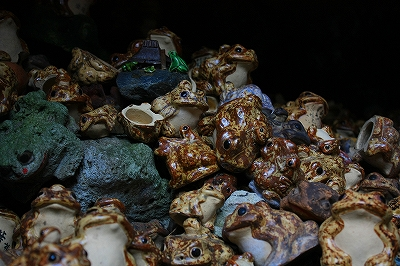
これだけ蛙の置物が並んでいる光景は中々お目にかかれないぞ。
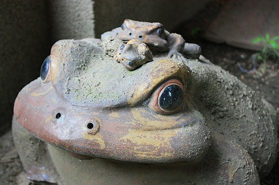
それにしても河童と蛙がこんな近くで信仰されているのには何か理由があるのだろうか。
はっきりとした理由は判るすべもないが、この一帯はかつて湖沼の多い低湿地帯だったと聞く。
河童と蛙、いずれも低湿地帯がお似合いの生き物じゃないか…おっと河童は想像上の生き物でしたね。
2009.03. 2010.05.
珍寺大道場 HOME